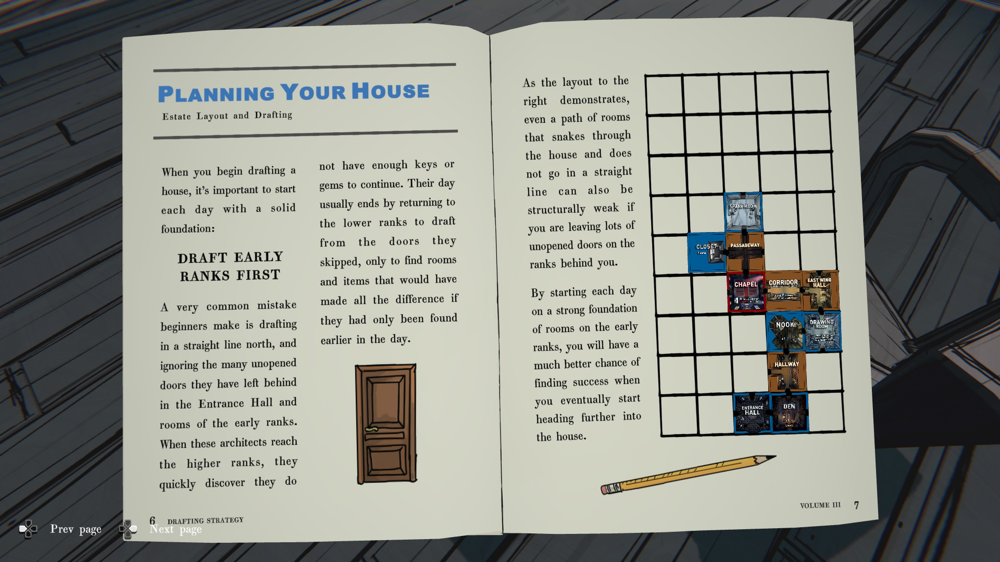

Drafting strategy
정기간행물 (PERIODICAL)
제목: Drafting Strategy Vol III
| 날짜 | 대출자 |
|---|---|
| 1993년 9월 5일 | Kimberly Thompson |
| 1993년 11월 13일 | Simon P. Jones |
Drafting Strategy
VOL III – 6월호 (June Issue)
목차 (CONTENTS)
| 항목 | 페이지 |
|---|---|
| The Potential Withinby the Editor | 2 |
| Gems, Gems, GemsGem Strategies and Tips | 4 |
| Planning Your HouseEstate Layout and Drafting | 6 |
| Top Drafting CombosFive Combos You Won’t Want to Miss | 8 |
| Making a ConnectionEstate Connectivity | 10 |
| Tips and TricksSuggestions for Success | 12 |
| Word from the Editorby the Editor | 15 |
The Potential Within
우리 모두는 빈 도면에서 시작한다.
열정적인 젊은 건축가에게 새로운 청사진은 무한한 가능성의 세계를 의미합니다.
하얀 캔버스를 바라볼 때, 여러분은 끝없는 잠재력과 아이디어를 탐구할 수 있습니다.
그러나 선택지가 너무 많으면, 건축가는 수많은 결정과 선택에 압도될 수도 있습니다.
“복도를 그릴까, 아니면 옷장을 그릴까?”
“집에는 몇 개의 침실이 필요할까?”
“Passageway가 정말로 보석 두 개의 가치가 있을까?”
이런 질문들은 설계 과정에 복잡성과 스트레스의 층을 더하게 됩니다.
그래서 더더욱 단순하고 효과적인 전략을 세우는 것이 중요합니다.
이 전략들을 활용하면 집을 설계할 때 성공적인 결과를 얻을 수 있습니다.
이 Architectural Digest 권에서는, 건축가들이 사용할 수 있는 여러 전략들을 제공하고, 그들이 자신만의 전략을 발전시킬 수 있도록 돕는 것을 목표로 합니다.

GEMS, GEMS, GEMS
모든 건축가에게 필요한 것 많은 건축가들이 집을 설계할 때 서로 다른 전략을 사용하지만,
대부분은 한 가지 핵심 원칙에 동의합니다.
설계할 때는 보석(GEMS)을 확보하라.
건축가들이 자주 저지르는 가장 흔한 실수 중 하나는 새로운 문을 열 때 필요한 자원이 부족해 코너에 몰리게 되는 것입니다.
세 가지 제시된 선택지를 고려할 보석이 부족하면, 원하지 않는 방을 설계할 수밖에 없게 됩니다.
이런 상황을 피하려면, 보석을 제공하는 방을 우선적으로 설계하고, 가능한 한 이른 시점에 보석을 확보하는 것에 집중하십시오.
이 접근법은 성공을 위한 확실한 준비가 될 것입니다.
독자 제안 GEM 전략 (Reader Submitted GEM Strats)
-
“방을 나가기 전에 반드시 그 방의 보석을 확인하세요. 저도 너무 자주 깜빡합니다!”
— Alice F.
-
“비상 상황을 대비해 보석을 조금은 아껴 두세요. 정말 필요한 방이 있을 때만 쓰려고 합니다.”
— Jenn H.
-
“상점에서 보석이 판매 중이라면 무조건 사세요!”
— Matthew M.
-
“목마르지 않더라도 ‘와인 저장고(WINE CELLAR)’는 절대 놓치지 마세요. 보석은 많을수록 좋습니다! (저에게는 약간의 문제가 있을지도 모릅니다…)”
— Craig O.
-
“저는 처음 다섯 단계에서는 절대 ‘PASSAGEWAY’를 설계하지 않습니다. 저에게 아주 잘 통하는 단순한 전략입니다.”
— Kyle P.

PLANNING YOUR HOUSE
부지(estate) 배치와 설계
집을 설계할 때는, 매일 탄탄한 기반에서 시작하는 것이 중요합니다.
초기 단계의 방부터 설계하라 (Draft Early Ranks First)
초보자들이 자주 저지르는 실수는 북쪽으로 일직선으로만 설계하면서 초반 구역의 열지 않은 문들을 무시하는 것입니다.
이런 건축가들은 상위 단계로 올라갈 때 열쇠나 보석이 부족해 더 이상 진행할 수 없다는 것을 깨닫습니다.
그들은 종종 처음에 지나쳤던 하위 단계의 문으로 돌아가 그제서야 큰 도움이 될 방이나 아이템을 발견하곤 합니다.
오른쪽 그림이 보여주듯, 집 안을 구불구불 통과하는 경로라도 직선이 아니면 구조적으로 약해질 수 있습니다.
특히 뒤에 많은 미개방 문을 남겨둔 경우 그렇습니다.
따라서 매일 초기 단계의 방들로 견고한 기반을 마련한 뒤 집 안쪽으로 설계를 진행하면, 더 깊은 구역으로 들어갈수록 성공 확률이 훨씬 높아집니다.

TOP DRAFTING COMBOS
놓치고 싶지 않은 다섯 가지 조합
집을 설계할 때 고려해야 할 또 하나의 요소는 방을 설계하는 순서입니다.
예를 들어, CLOISTER(수도원) 를 TERRACE(테라스) 보다 먼저 설계하면, 보석 3개를 잃게 됩니다.
하지만 반대 순서로 설계하면, CLOISTER는 무료로 지을 수 있습니다.
이처럼 시너지 효과가 있는 방의 조합을 파악하는 것이 첫걸음입니다.
그러나 최적의 순서로 설계하는 것은 추가적인 이점을 주며, 성공 확률을 크게 높여 줍니다.
TERRACE
초록색 방은 설계 비용이 들지 않습니다.
CLOISTER
보석 비용: 💎💎💎
OTHER FLOORPLAN COMBOS
기타 평면 설계 조합
FOYER(현관) 를 GREAT HALL(대홀) 보다 먼저 설계하면 그 많은 문들이 모두 잠금 해제됩니다.
NURSERY(유아실) 다음에 BUNK ROOM(2층 침대 방) 을 설계하면 침실 트리거가 두 번 적용되어 10걸음의 추가 이동을 얻습니다.
OFFICE(사무실) 를 설계한 후 CONFERENCE ROOM(회의실) 을 설계하면 금화 수집을 위해 되돌아다닐 필요가 없습니다.
ATTIC(다락방) 은 아이템이 많을수록, WORKSHOP(작업실) 에서 새로운 장치를 만들 확률이 높아집니다.
MAKING A CONNECTION
부지(estate) 연결성
두 개의 방 조합만이 시너지를 내는 것은 아닙니다.
일부 방은 특정 다른 방과 함께 설계할 때만 작동합니다.
이 방들은 단독으로는 약하지만, 연결성이 발견되면 매우 유용해질 수 있습니다.
UTILITY CLOSET(유틸리티 수납실) 은 그 좋은 예입니다.
이 방은 혼자서는 아무 일도 하지 않지만, 집 안의 다른 방들을 강화하거나(또는 약화시키거나) 할 수 있습니다.
-
GARAGE(차고) – 차고 문에 전원을 공급하고 서쪽 통로 접근을 허용합니다.
-
DARKROOM(암실) – 퓨즈가 나간 후 불을 다시 켭니다.
-
GYMNASIUM(체육관) – 발판 손실을 막기 위해 조명을 유지합니다.
OTHER EXAMPLES of Connectivity
연결성의 다른 예시들
가장 간단한 예로, HER LADYSHIP’S CHAMBER(귀부인의 방) 은 Lady Epsen의 BOUDOIR(부도아) 와 WALK-IN CLOSET(드레스룸) 과 시너지를 형성합니다.
BOILER ROOM(보일러실) 은 증기 에너지를 이용해 집의 여러 방으로 연결되는 덕트를 이어 줍니다.
LABORATORY(연구실), GARAGE(차고), LAUNDRY ROOM(세탁실), FURNACE(화로실), PUMP ROOM(펌프실) 등에서 이 증기 동력을 활용합니다.
PUMP ROOM(펌프실) 은 저택의 물 흐름을 제어하며,x POOL(수영장), AQUARIUM(수족관), GREENHOUSE(온실), KITCHEN(부엌) 등 본관 외부의 여러 시설과 직접적으로 상호작용할 수 있습니다.

TIPS & TRICKS
팁과 요령
-
KITCHEN(부엌) 에서는 그날 DINING ROOM(식당) 에서 어떤 요리가 제공되는지 확인할 수 있습니다. 이를 통해 특정 방을 설계하여 식사를 더욱 맛있게 만들 기회를 얻을 수 있습니다.
-
BUNK ROOM(이층 침대방) 은 두 개의 침실로 계산될 뿐 아니라, 두 개의 방으로도 계산됩니다. 이는 MASTER BEDROOM(안방) 에서 부여되는 이동 거리, TOMB(무덤) 에서 뿌려지는 금화의 양, 그리고 SERVANT’S QUARTERS(하인들의 방) 에서 발견되는 열쇠의 수를 증가시킵니다.
-
BILLIARD ROOM(당구실) 이나 PARLOR(응접실) 의 퍼즐을 해결할 때마다 다음에 그 방을 설계할 때의 난이도가 약간 상승합니다.
-
방을 처음 탐험했을 때 아이템이 없었다고 해서, 다음 번 설계 시에도 없으리란 보장은 없습니다.
-
FREEZER(냉동실) 을 설계한 다음 날에는 자동으로 재냉각 주기(cooldown refreezing cycle) 에 들어가며, 24시간 동안은 다시 설계할 수 없습니다.
-
특정 방에서 막히거나, 무엇을 해야 할지 모르겠다면, 그냥 넘어가는 것이 현명할 때도 있습니다. 게임의 여러 도전 과제는 다양한 해결책이 존재하며, 나중에 도움이 될 힌트나 정보 조각을 발견할 확률이 높습니다.
-
확신이 서지 않을 때는, 이전에 본 적 없는 방을 설계하십시오. 방이 별로 유용해 보이지 않더라도, 그 안에는 여정에 도움이 될 단서나 정보가 숨어 있을 수 있습니다.

WORD FROM THE EDITOR
편집자의 말
이번 호에서는 독자 여러분께 다양한 전략과 팁을 제시했지만, 저희 Architectural Digest는 예비 건축가 여러분이 성공의 정해진 설계도란 존재하지 않는다는 사실을 알기를 바랍니다.
자신만의 길을 개척하고 독창적인 전략을 세우는 것이야말로 가장 좋은 결과를 가져온다고 믿습니다.
각 건축가는 자신만의 즐겨 찾는 방이 있고, 각 설계자는 자신만의 도구를 갖고 있습니다.
따라서 모든 플레이어는 자신만의 플레이 스타일과 비밀스러운 요령을 발견하게 되며, 그것을 세상과 공유하거나, 혹은 자신만의 비밀로 간직할 것입니다.
어떤 전략을 사용하시든, 저희는 여러분이 꿈꾸는 집을 완성하기를 그리고 그 과정에서 행운이 함께하기를 진심으로 바랍니다.